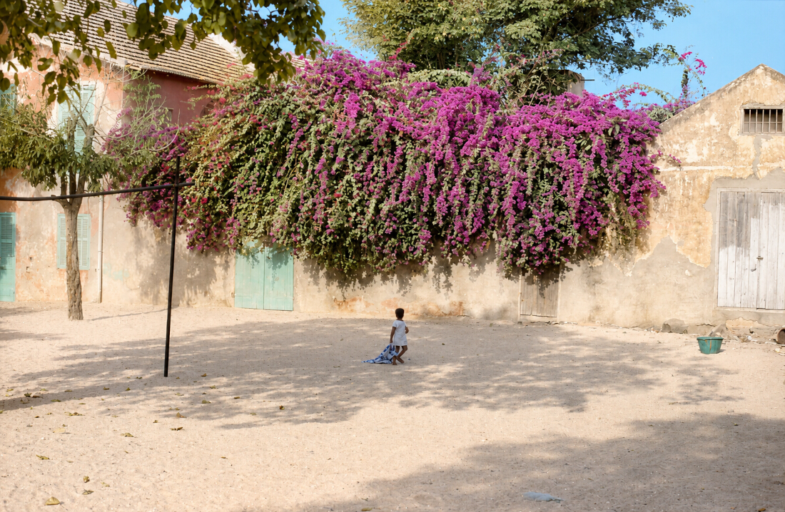
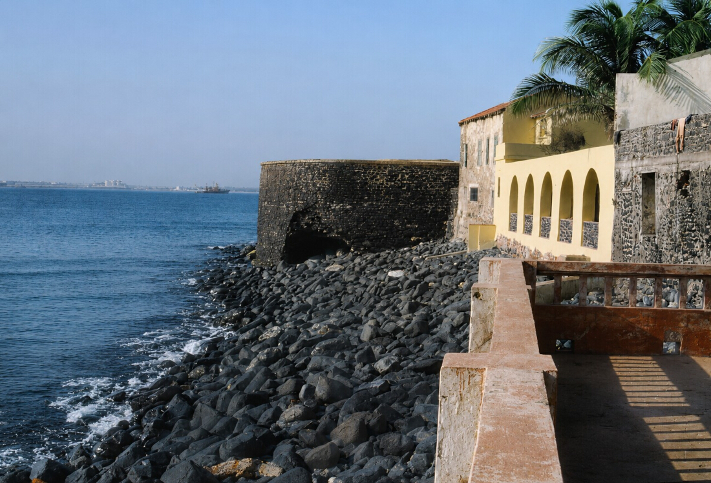
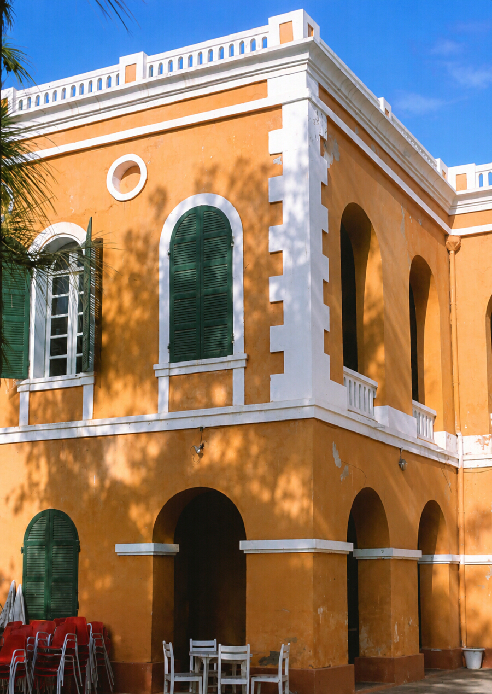
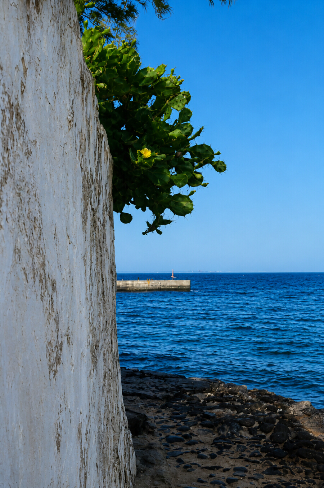

Le Sénégal occupe une place particulière dans mon cœur. J'y ai vécu des moments qui ont profondément marqué ma vie.
L'île de Gorée reste l'un des lieux les plus émouvants de mes souvenirs africains. Ses ruelles colorées, son histoire et son atmosphère unique ont profondément marqué ma mémoire.



